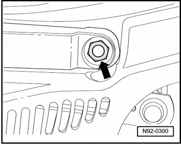

Wiper Arm, Installing
Windshield Wiper System
Wiper Arm, Installing
- Position the driver wiper arm approximately in park position on the wiper arm shaft.

- Install the nut - 2 - loosely on the passenger wiper arm shaft.
- Position the stretched passenger wiper arm on the wiper arm shaft in the position illustrated.

- Install disc - 1 - on wiper arm shaft.
- Install the nuts - 1 - and - 2 - loosely on the passenger wiper arm shafts.

• Only tighten the nut - 2 - after adjusting the windshield wiper blade park position.
- Tighten the nut - 1 - to the specification given in the assembly overview --> [ Windshield Wiper System Assembly Overview ] Windshield Wiper System Assembly Overview.
- Bring the passenger wiper arm into its approximate park position by hand.
- Adjust the windshield wiper blade park position --> [ Windshield Wiper Blades, Adjusting Park Position ] Windshield Wiper Blades, Adjusting Park Position.